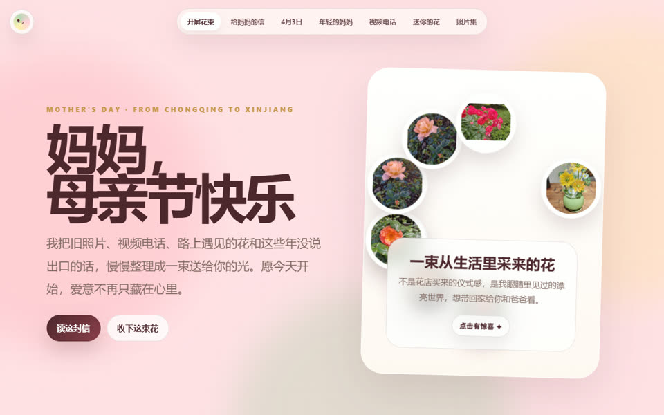

全国最大的大学生 AI 社群
网站。视频。写真。技能。知识库。
树成林
不是把案例堆满屏幕，而是让观众先记住一个判断：这里有一条学生 AI 生产线。
需求先被分流。
每个入口都是一句真实需求。点一下，看它被送到哪条产线。
作品必须能运行。
有源码的作品不放截图，直接让它在页面里活着。
视频有自己的工位。
预览负责抓住人，链接负责把人带到完整成片。
一张照片，一段聊天，一个小游戏，都能变成入口。
这里保留三个不同形态的产物：身份视觉、技能封装、互动游戏。它们不是附属模块，是社群继续传播的触点。
最后留下证据。
素材不是装饰，它证明这条产线真的跑过。